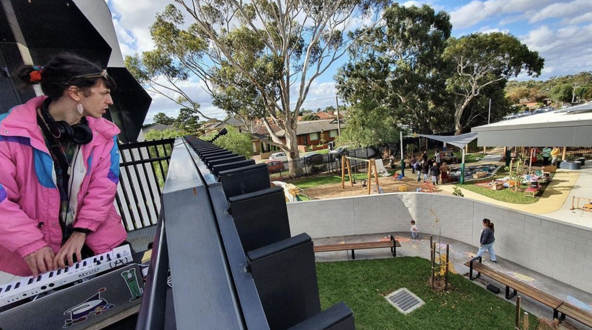
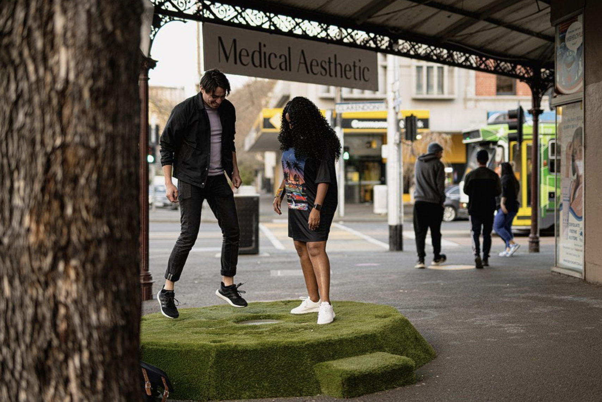
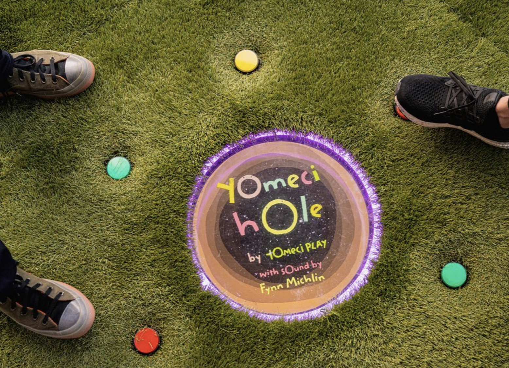

interactive audio projects
YOMECI
YOMECI (You, Me & the City) by Uyen Nguyen (RMiT, Future Play Lab) follows a group of creatures that take to the streets on a mission to encourage play on sidewalks, parks and other liminal spaces. I've had the pleasure of crafting the sonic palette of the creatures and performing alongside Uyen on the following projects:
yomeciband (2022 - present)

"In YomeciBand, the footpath next to the parklet becomes a track, playable with your feet. Tunes and compositions are activated in a improvised exchange with passers-by as they move across clusters of pavement drawings of creatures. In temporarily activating a street through making it playable, the work connected people and place through urban play and creative technologies."
- 2021, Uyen Nguyen & Matthew Riley
YomeciBand was awarded "Best Music and Installation" at AudioMostly 2022 Conference (St Polten Austria)
yomeciband performances:
Whitehorse City (April 2023)
Merri-bek City (Glenroy Festival 2022, Yomeci Children Playground Launch 2023)
City of Maribyrnong (Apr-May 2022)
City of Stonnington (Feb-Mar 2022)
City of Melbourne (featured in Melbourne Design Week 2022, Melbourne Knowledge Week 2022)
yomeci fields
YomeciFields brings player-generated audioreactivity to the YomeciBand track - players' footsteps play the YoMeCi instruments in real time, augmenting their movements as they dance, run and wiggle along the course. A perfomer can play along using a set of expressive MPE instruments on Launchpad to further soundtrack the players' movements.
yomecifields performances:
IMMERSE Festival 2024, City of Knox
ISEA 2024 Everywhen (Brisbane)
yomeci hole


A game which sees the player stand above a virtual hole in the ground which connects the player to a subterranean world. The player uses their feet to step and jump on buttons as they journey through an underground world.
yomeci hole showcases:
City of Port Phillip — Clarendon Street Arcade, Melbourne International Games Week (2022)
City of Melbourne — Play Capitol Arcade (2023)
Yalinguth
The Yalinguth app is an immersive audio app connecting Melbourne audiences to the important Aboriginal and Torres Strait Islander history of places. Spatial recreations of 1800s Australia soundscapes set the stage for an augmented audio experience that shares history from Aboriginal and Torres Strait Islander perspectives.
2023 Melbourne Fringe Festival: Winner – Best Words & Ideas
2024 Australian International Documentary Conference Awards: Nomination - Best Interactive/ Immersive Documentary
Norby (2019 - 2023)
Produced SFX and BGM for Norby's World, a browser based game to help kids learn English during COVID-19 Lockdowns.
Sound design for desktop robot companion prototype version of Norby. Beep boop!